日本小说家乙一是一个讲故事的天才，17岁就以《夏天、烟火、我的尸体》获奖，展露出过人的才华。
他讲述的故事荒诞离奇、悬疑色彩浓重，往往有着意想不到的结局。
作品风格可分为以残酷而凄惨为基调的“黑乙一”，及悲痛而纤细为基调的“白乙一”
乙一尤其擅长以第一人称的口吻讲述故事，情绪代入感极强，总能够以一些非常独特的视角观察到人性的阴暗和温暖。
今天我们介绍由乙一小说《zoo》改编的电影《继续活下去的五个故事》。
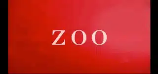
01 小饰和洋子
“如果有一天，妈妈把我杀了，我一定会高明的伪装成自杀模样”
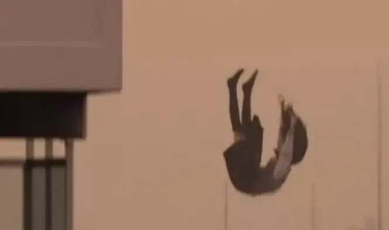
这个稚嫩、清澈、小心翼翼又悲惨的独白来自于洋子。
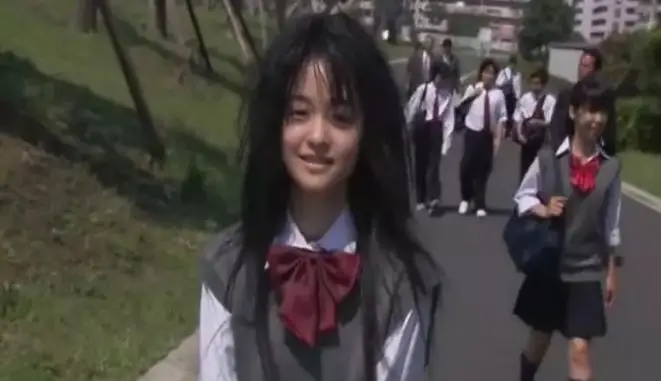
洋子有个双胞胎妹妹小饰。
她们有着同样的相貌，但是却有着不同的命运。
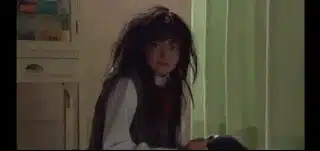
搜索却有着不同的命运
妈妈只喜欢小饰，却不喜欢洋子，甚至，妈妈还会对洋子实施家暴。
不管是在家里还是在学校里，洋子几乎是没有尊严的存在。
总是备受欺凌和侮辱。
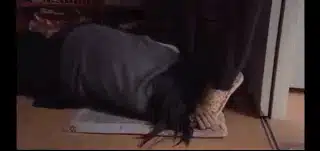
我们无从得知妈妈为什么如此讨厌洋子。
只知道洋子是一个灰暗、柔弱没有自信的女孩。
直到洋子遇到了一个忘年交美津子阿姨。
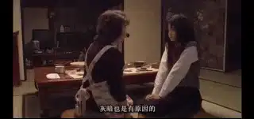
慈爱的阿姨为洋子做了美味的寿司，帮她梳洗打扮。
鼓励她努力改变自己。
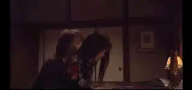
甚至，美津子还将家里的钥匙交给了洋子，告诉洋子：这是我们俩的家，你可以随时来。
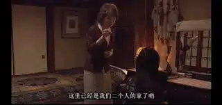
暖意刚刚进入洋子的心里，寒风就刮了起来。
当她冒死从妈妈那偷来被没收的钥匙时，美津子却过世了。
面对失去的希望，洋子哭着说：“为什么这么不公平”。
想到妈妈有可能要将自己杀死，她看着手里紧握的钥匙。
洋子决定要做出改变........
-02- 七个房间
这是本片最精彩、最扣人心悬的一个故事。
姐姐和弟弟被人打晕，醒来时，却发现两人被囚禁在一个密室里。
密室中每天会送来一片面包来维持他们的生命。
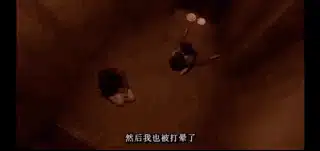
除此之外，他们只能在密室里等待未知的命运。
他们不知道是谁将自己打晕，也不知道将来会发生怎么样的事情。
恐惧和不安笼罩在姐弟两个人的身上。
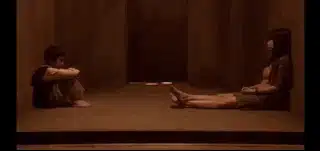
忽然，他们找到了一个救命稻草。
密室中有一条很窄的水渠。
恰好只有小弟弟可以游出去。
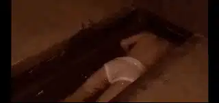
小男孩游过去，却发现有七个相同的密室。
里面都有一个被打晕囚禁的女孩。
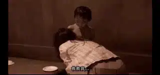
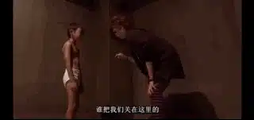
可是只有最左边的第七个房间没有人。
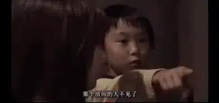
房间里的人去哪里了？？
挨着第七个房间的女人恐惧地告诉小孩：当你被囚禁满一周的时候，你将会被残忍杀害。
当姐姐和小男孩发现水渠里漫出的红色血液时，她们知道原来这是真的。
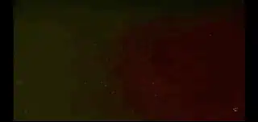
她们陷入到巨大的绝望中。
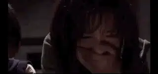
最终姐姐想到了一个绝境求生的方法.......
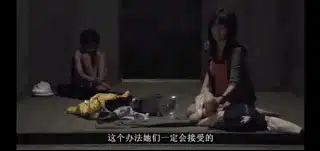
-03- so far
这个是最有创意、最温情感人的一个故事，电影镜头以及布景的设计也非常完美。
故事发生在一个三口之家。
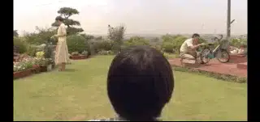
一天晚上，小男孩一个人在家里玩拼图。
广播中报道了一件交通事故，两人死亡。
似乎死者正是小男孩的父母。
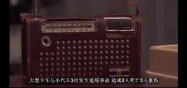
可是父母忽然出现在家中。
只是爸爸、妈妈看不到彼此，只有小男孩能够同时看到他们。
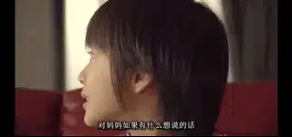
妈妈告诉小男孩，爸爸出车祸死了，只有自己活下来了。
而爸爸也同样告诉小男孩，妈妈死了，爸爸是幸存者。
就这样，三个人这样诡异的生活在一起，爸爸妈妈的交流都是通过小男孩来传话。
一天，爸爸妈妈产生了激烈的争吵。
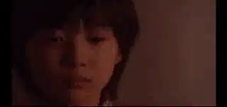
他们对彼此恶毒的语言暴力都通过小男孩来传达。
终于，小男孩不堪重负，昏倒在家中。
小男孩醒来后，更奇怪的事情发生了。
小男孩再也不能同时看到爸爸妈妈，只能看到他们两人中的一个。
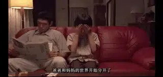
当爸爸在的时候，小男孩就看不到妈妈。
妈妈在的时候，就看不到爸爸。
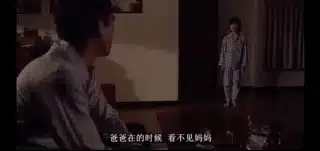
这些接连的怪事到底是如何发生的呢？
.......
-04- 向阳之诗
这是一部动画短片。
一个男人创造了一个机器人女孩。
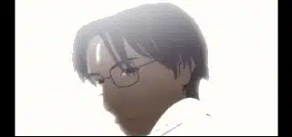
接着，这个男人带着女孩来到了一个漂亮的世界。
这里鸟语花香、绿树成荫，整个画面非常美丽安静。
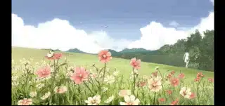
但是，这份美丽总是让人感觉有些不对劲。
微风背后，总感觉有丝丝凉意。
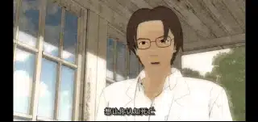
男人是谁？
他为什么要创造这个机器女孩？
为什么要特意通过一只死去的鸽子让女孩认知死亡？
有一天，机器人女孩为了救一个兔子，掉入了方丈深渊。
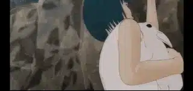
当她坠入崖底的时候，她才看清楚了这个世界的真面貌。
鸟语花香的下面是早已灭绝的人类文明。
那个创造她的男人是唯一幸存的人类么
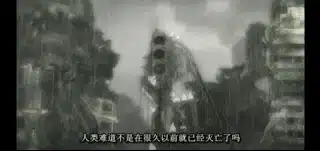
当摔断脖子的女孩跌跌撞撞回到男人的身旁时。
她请求男子救活早已死去僵硬的兔子。
男子告诉她，兔子已经死了，再也救不回来。
女孩伤心欲绝。
第一次，女孩知道，她无法面对别人的死亡。
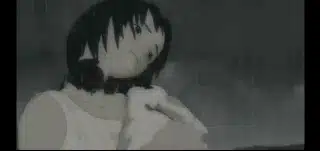
当得知男人制造她的目的是为了将自己埋葬的时候。
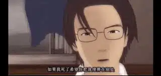
女孩心里痛苦到了极点，甚至悔恨男子将自己创造出来。
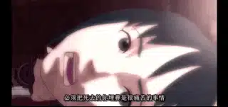
最终，女孩该如何面对男子的死亡？
......
第五个故事太过于阴郁和艰涩，不推荐大家观看，这里也不做介绍。
电影中的这些短故事看上去离奇荒诞，但却在最荒诞恐怖之处，照进了人心的最深处，捕捉到了我们真实的影子。
短片中涉及了社会和个体的各种黑暗：不公平、虐待、自私、家庭矛盾、冷漠、死亡，当乙一以他最独特的故事将这些内容呈现出来的时候。
我们才发现，认识我们自己可能不是要从美好开始，而是首先要认识我们的恶。
不认识恶，就不知道孤独和堕落。
看不到绝望，就无法走向爱和救赎。
很多时候，真实都是盛开在寒风凛冽的恶之谷里，那里，所有的一切都会赤露敞开。
当我们凝视他们的时候，我们才发现，我们的邪恶里混杂着善良，眼泪中充斥着恶意。
我们既歇斯底里又冷静地让人后背发凉，既脆弱又冰冷地让人胆寒。
面对这些荒凉，乙一的办法是“以黑暗寻找希望，以悲伤提示温暖，以恐怖安慰孤独。”
所以，在原著中，机器人女孩面对死去的男子时，这么说：
“但是，现在，我仍然感激你。如果不是诞生在这个世界上，我就看不到铺在山冈上的草原。
如果不是被装上了心，我就不能享受眺望鸟巢的喜悦，也就不可能在喝了苦咖啡后咧嘴。
与这个世界的闪光点相逢，是多么值得的事情。
这样想来，就连内心痛苦得要流血的感觉，都让自己觉得是活着才有的宝贵的证据……”
这份面对孤独的态度和情感构成了这些故事的底色，所以在观看的过程中总有一种诡异的美丽和说不清楚的感动。
但是，乙一有一双发现恶与孤独的眼睛，却没有走向救赎和恩典。
而是以孤独去表达孤独，以空虚去对抗空虚。
乙一的底色是黑白相间的灰暗。
所以，电影独特感人，却让人看不到盼望。
但是乙一敏锐的观察和独特的表达不得不让我们佩服。
关注并回复：继续活下去的五个故事
获取电影资源
相关推荐：
100双绝望的眼睛
《超脱》| 我的灵魂失语了
这里没有挑逗你眼目情欲的小鲜肉
也没有挑动你肉体情欲的段子
更没有膨胀你今生骄傲的鸡血
我们只在乎那些最质朴真诚的作品
在那里我们才能恢复真正的想象力
我们也坚信这才是我们真正需要的

ID:Six_hundred_hits
长按二维码，一键关注
【六百击】
-END-
电影评论
尽情分享朋友圈

苹果打赏
通道
小提示：文末广告是腾讯配送广告，内容与本号无关，但您的每次点击（无需反复点）都会给平台带来几毛收益，欢迎您点击支持六百击。